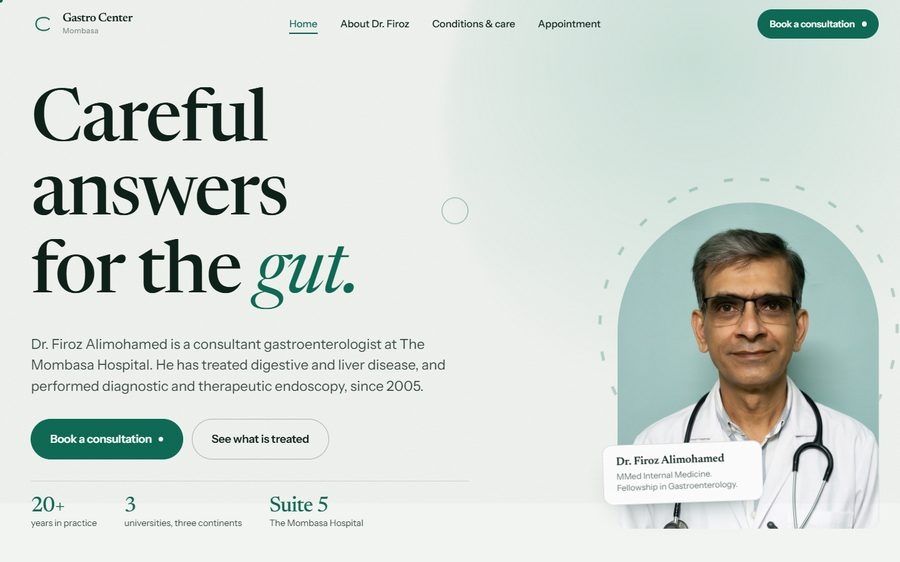
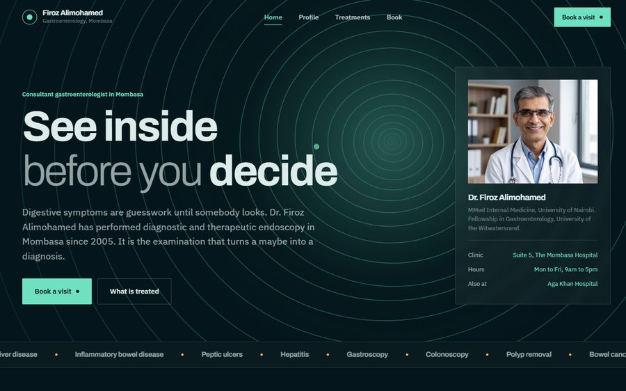

Concept one
The Continuous Line
Light and editorial. The gut is one passage from mouth to colon, so a single drawn line threads the page and inks itself in as you scroll, stop by stop.
Open Site One
Concept two
The Aperture
Dark and immersive. The hero is the view down an endoscope, drawn live on canvas, with rings receding toward a glow that follows your cursor.
Open Site TwoReal content, checked
Training, practice, memberships, conditions and clinic details come from Dr. Firoz's own material. Everything should still be approved before going live.
Placeholders to replace
The telephone number and email address are stand ins. Both are flagged in the footer of every page.
Forms are demonstrations
The appointment forms validate and confirm, but send nothing. They need an endpoint or a form service before launch.